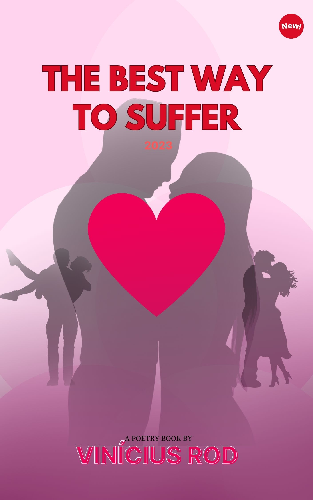

O Que É Ser Dependente? - A Vida Cristã e Seus Aspectos
O livro contém algumas histórias e reflexões de Vinícius Rod, convertido à Jesus e portador de Transtorno Obsessivo-Compulsivo, doença psiquiátrica, cientificamente sem cura. Durante e depois das muitas aflições da vida, o autor reflete sobre o que significa estar em dependência de Deus no dia a dia, e as transformações que a fé genuína em Jesus Cristo pode trazer, especialmente se tratando dos dias atuais de caos.
